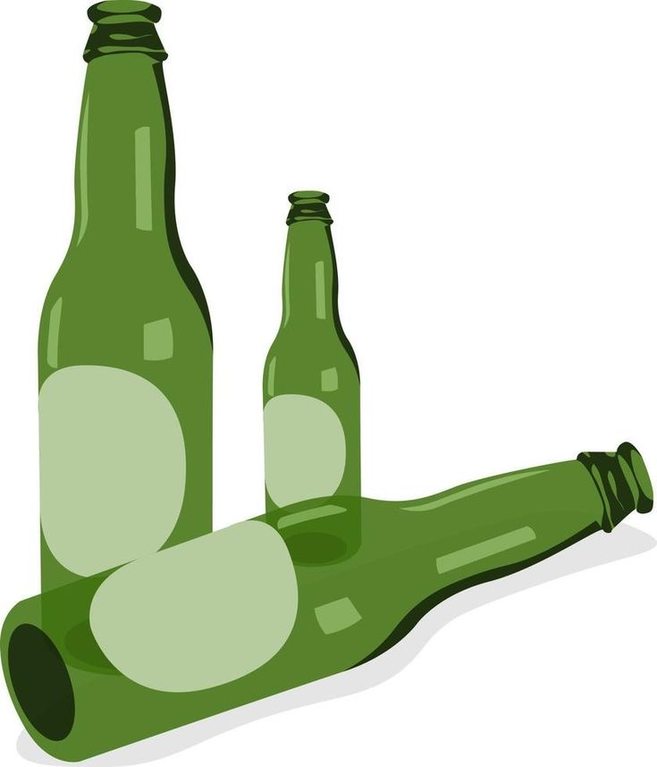
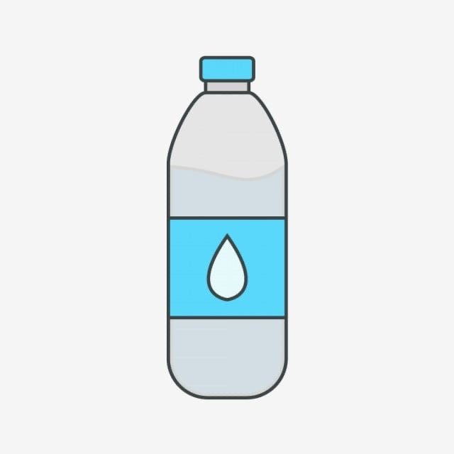
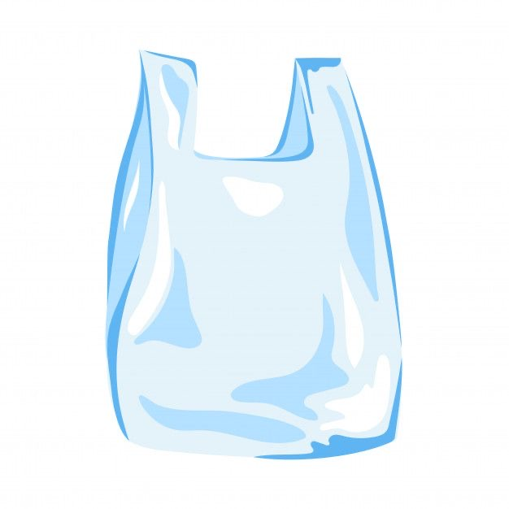
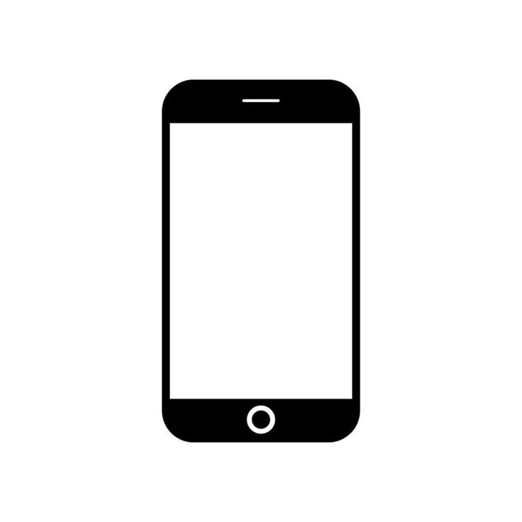

Kategori dan Jenis Sampah
Sebelum dapat memahami cara mengelola sampah dengan tepat dan bertanggung jawab. hal penting yang perlu diketahui adalah perbedaan dan karakteristik dari setiap jenis sampah yang ada. Tidak hanya terdiri dari sampah organik dan anorganik, sampah juga dapat dibedakan berdasarkan kategori tertentu. Berikut adalah jenis-jenis sampah berdasarkan sifat, sumber, dan waktunya. Pemanfaatan sampah dilakukan untuk mencegahnya berakhir sia-sia tidak terkelola. Pengelolaan sampah bertanggung jawab juga berperan mengurangi potensinya mencemari lingkungan.
Pemilihan Sampah
Berikut adalah jenis sampah yang dapat kami daur ulang

Botol

Botol Kaca

Plastik
